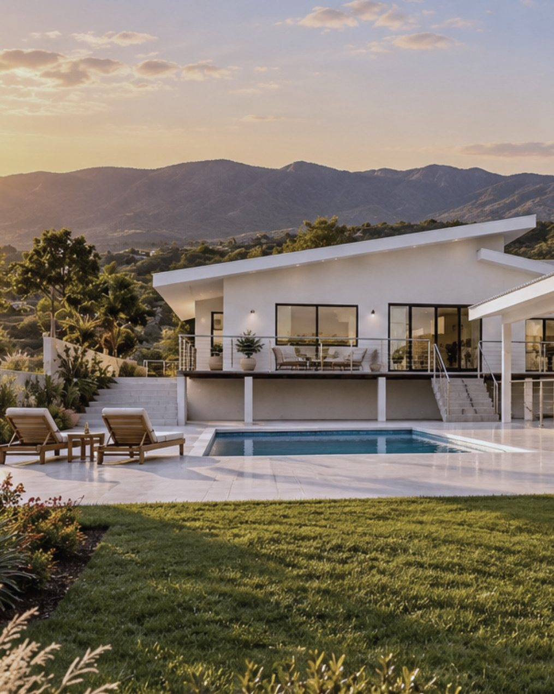
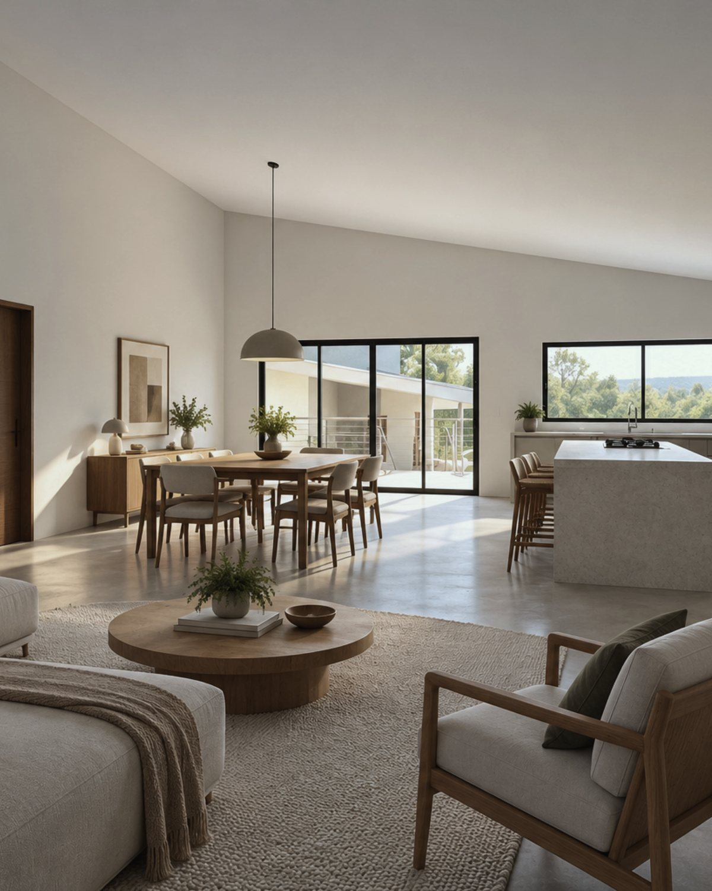
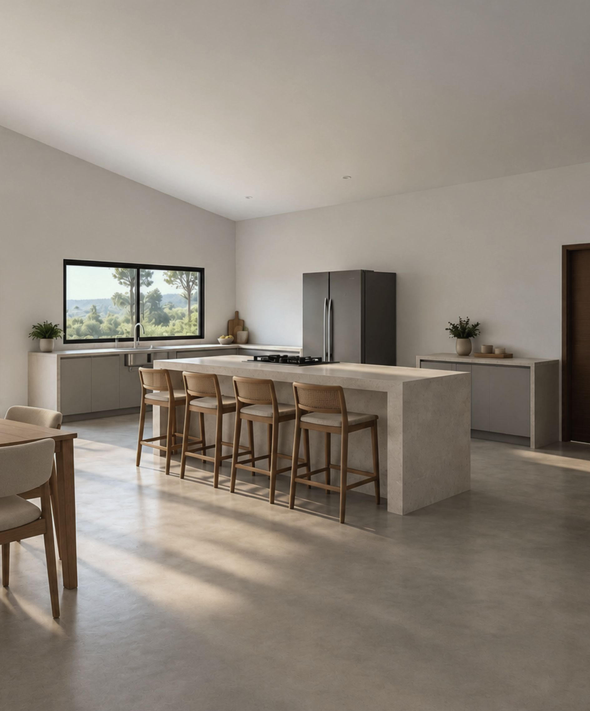
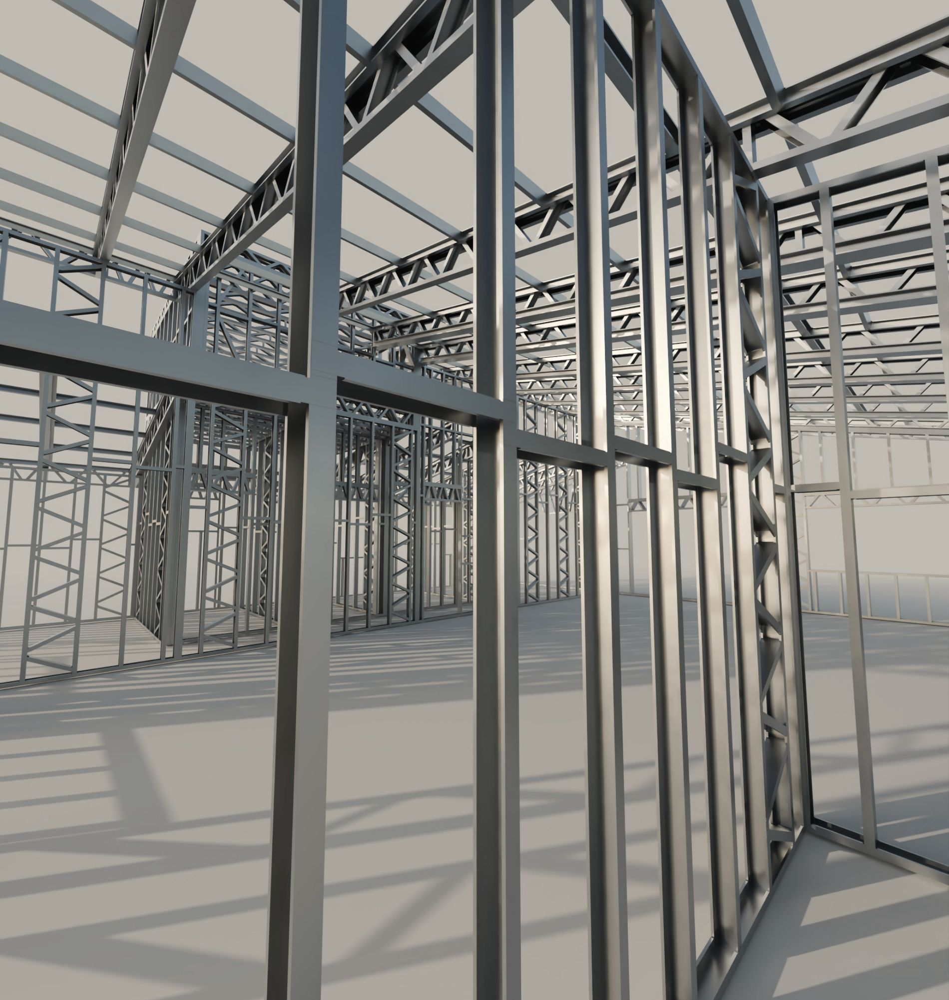

obras / casas
Casa Taquaraçu


Casa e edícula em steel frame numa encosta da serra mineira.
- Local
- Taquaraçu de Minas · MG
- Área construída
- 296,35 m²
- Sistema
- Light steel frame
- Escopo
- Projeto executivo, complementares e compatibilização
- Etapa
- Projeto
Interiores


Estrutura

